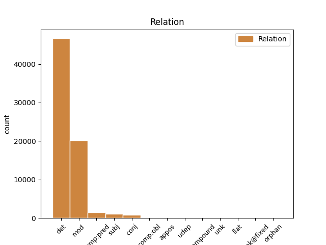
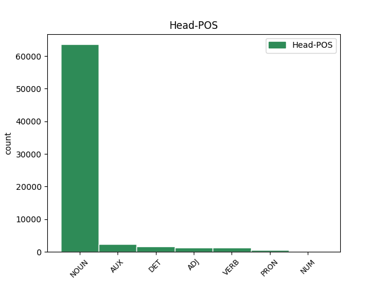
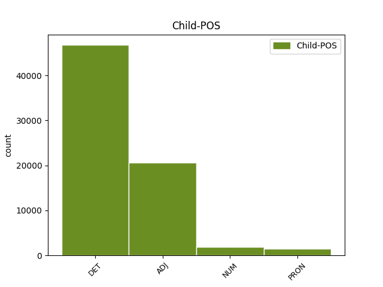

Distribution of features within this leaf



Agreement Rules sorted by frequency.
- When the dependent token is the determiner(det) of the head token, and the dependent token is DET.
1 El el DET DET Definite=Def|Gender=Masc|Number=Sing|PronType=Art 2 det _ _
2 sanedrí sanedrí NOUN NOUN Gender=Masc|Number=Sing 0 _ _ _
3 estaria _ _ _ _ 0 _ _ _
4 format _ _ _ _ 0 _ _ _
5 per _ _ _ _ 0 _ _ _
6 Adolfo _ _ _ _ 0 _ _ _
7 Suárez _ _ _ _ 0 _ _ _
8 , _ _ _ _ 0 _ _ _
9 Leopoldo _ _ _ _ 0 _ _ _
10 Calvo-Sotelo _ _ _ _ 0 _ _ _
11 i _ _ _ _ 0 _ _ _
12 Felipe _ _ _ _ 0 _ _ _
13 González _ _ _ _ 0 _ _ _
14 . _ _ _ _ 0 _ _ _
1 El _ _ _ _ 0 _ _ _
2 líder _ _ _ _ 0 _ _ _
3 del _ _ _ _ 0 _ _ _
4 PSOE _ _ _ _ 0 _ _ _
5 , _ _ _ _ 0 _ _ _
6 va _ _ _ _ 0 _ _ _
7 anunciar _ _ _ _ 0 _ _ _
8 ahir _ _ _ _ 0 _ _ _
9 la _ _ _ _ 0 _ _ _
10 seva _ _ _ _ 0 _ _ _
11 intenció _ _ _ _ 0 _ _ _
12 de _ _ _ _ 0 _ _ _
13 proposar _ _ _ _ 0 _ _ _
14 la _ _ _ _ 0 _ _ _
15 creació _ _ _ _ 0 _ _ _
16 d' _ _ _ _ 0 _ _ _
17 un _ _ _ _ 0 _ _ _
18 consell consell NOUN NOUN Gender=Masc|Number=Sing 0 _ _ _
19 assessor _ _ _ _ 0 _ _ _
20 del _ _ _ _ 0 _ _ _
21 Govern _ _ _ _ 0 _ _ _
22 en _ _ _ _ 0 _ _ _
23 assumptes _ _ _ _ 0 _ _ _
24 internacionals _ _ _ _ 0 _ _ _
25 , _ _ _ _ 0 _ _ _
26 integrat integrat ADJ ADJ Gender=Masc|Number=Sing|VerbForm=Part 18 mod _ _
27 pels _ _ _ _ 0 _ _ _
28 expresidents _ _ _ _ 0 _ _ _
29 del _ _ _ _ 0 _ _ _
30 Govern _ _ _ _ 0 _ _ _
31 . _ _ _ _ 0 _ _ _
1 Els el DET DET Definite=Def|Gender=Masc|Number=Plur|PronType=Art 0 _ _ _
2 dos dos NUM NUM Gender=Masc|Number=Plur|NumType=Card 1 mod _ _
3 ministres _ _ _ _ 0 _ _ _
4 van _ _ _ _ 0 _ _ _
5 participar _ _ _ _ 0 _ _ _
6 ahir _ _ _ _ 0 _ _ _
7 en _ _ _ _ 0 _ _ _
8 la _ _ _ _ 0 _ _ _
9 reunió _ _ _ _ 0 _ _ _
10 que _ _ _ _ 0 _ _ _
11 la _ _ _ _ 0 _ _ _
12 UE _ _ _ _ 0 _ _ _
13 va _ _ _ _ 0 _ _ _
14 celebrar _ _ _ _ 0 _ _ _
15 a _ _ _ _ 0 _ _ _
16 Elsinor _ _ _ _ 0 _ _ _
17 ( _ _ _ _ 0 _ _ _
18 Dinamarca _ _ _ _ 0 _ _ _
19 ) _ _ _ _ 0 _ _ _
20 . _ _ _ _ 0 _ _ _
1 El _ _ _ _ 0 _ _ _
2 sanedrí _ _ _ _ 0 _ _ _
3 estaria estar AUX AUX Mood=Cnd|Number=Sing|Person=3|VerbForm=Fin 0 _ _ _
4 format format ADJ ADJ Gender=Masc|Number=Sing|VerbForm=Part 3 comp:pred _ _
5 per _ _ _ _ 0 _ _ _
6 Adolfo _ _ _ _ 0 _ _ _
7 Suárez _ _ _ _ 0 _ _ _
8 , _ _ _ _ 0 _ _ _
9 Leopoldo _ _ _ _ 0 _ _ _
10 Calvo-Sotelo _ _ _ _ 0 _ _ _
11 i _ _ _ _ 0 _ _ _
12 Felipe _ _ _ _ 0 _ _ _
13 González _ _ _ _ 0 _ _ _
14 . _ _ _ _ 0 _ _ _
1 El _ _ _ _ 0 _ _ _
2 Ministre _ _ _ _ 0 _ _ _
3 de _ _ _ _ 0 _ _ _
4 Foment _ _ _ _ 0 _ _ _
5 va _ _ _ _ 0 _ _ _
6 declarar _ _ _ _ 0 _ _ _
7 ahir _ _ _ _ 0 _ _ _
8 que _ _ _ _ 0 _ _ _
9 el _ _ _ _ 0 _ _ _
10 sorprenen _ _ _ _ 0 _ _ _
11 els _ _ _ _ 0 _ _ _
12 dubtes _ _ _ _ 0 _ _ _
13 que _ _ _ _ 0 _ _ _
14 " _ _ _ _ 0 _ _ _
15 alguns algun PRON PRON Gender=Masc|Number=Plur|PronType=Ind 34 subj _ SpaceAfter=No
16 , _ _ _ _ 0 _ _ _
17 dins _ _ _ _ 0 _ _ _
18 del _ _ _ _ 0 _ _ _
19 seu _ _ _ _ 0 _ _ _
20 concepte _ _ _ _ 0 _ _ _
21 mal _ _ _ _ 0 _ _ _
22 educat _ _ _ _ 0 _ _ _
23 de _ _ _ _ 0 _ _ _
24 la _ _ _ _ 0 _ _ _
25 democràcia _ _ _ _ 0 _ _ _
26 i _ _ _ _ 0 _ _ _
27 de _ _ _ _ 0 _ _ _
28 les _ _ _ _ 0 _ _ _
29 relacions _ _ _ _ 0 _ _ _
30 entre _ _ _ _ 0 _ _ _
31 partits _ _ _ _ 0 _ _ _
32 " _ _ _ _ 0 _ _ _
33 , _ _ _ _ 0 _ _ _
34 manifesten manifestar VERB VERB Mood=Ind|Number=Plur|Person=3|Tense=Pres|VerbForm=Fin 0 _ _ _
35 sobre _ _ _ _ 0 _ _ _
36 la _ _ _ _ 0 _ _ _
37 capacitat _ _ _ _ 0 _ _ _
38 de _ _ _ _ 0 _ _ _
39 l' _ _ _ _ 0 _ _ _
40 exministre _ _ _ _ 0 _ _ _
41 de _ _ _ _ 0 _ _ _
42 Presidència _ _ _ _ 0 _ _ _
43 Juan _ _ _ _ 0 _ _ _
44 José _ _ _ _ 0 _ _ _
45 Lucas _ _ _ _ 0 _ _ _
46 per _ _ _ _ 0 _ _ _
47 convertir _ _ _ _ 0 _ _ _
48 se _ _ _ _ 0 _ _ _
49 en _ _ _ _ 0 _ _ _
50 el _ _ _ _ 0 _ _ _
51 president _ _ _ _ 0 _ _ _
52 del _ _ _ _ 0 _ _ _
53 Senat _ _ _ _ 0 _ _ _
54 . _ _ _ _ 0 _ _ _
1 ( _ _ _ _ 0 _ _ _
2 ... _ _ _ _ 0 _ _ _
3 ) _ _ _ _ 0 _ _ _
4 I _ _ _ _ 0 _ _ _
5 gestionar _ _ _ _ 0 _ _ _
6 fons _ _ _ _ 0 _ _ _
7 econòmics _ _ _ _ 0 _ _ _
8 , _ _ _ _ 0 _ _ _
9 que _ _ _ _ 0 _ _ _
10 procedents _ _ _ _ 0 _ _ _
11 de _ _ _ _ 0 _ _ _
12 municipis _ _ _ _ 0 _ _ _
13 bascos _ _ _ _ 0 _ _ _
14 i _ _ _ _ 0 _ _ _
15 altres _ _ _ _ 0 _ _ _
16 institucions _ _ _ _ 0 _ _ _
17 públiques públic ADJ ADJ Gender=Fem|Number=Plur 0 _ _ _
18 i _ _ _ _ 0 _ _ _
19 privades privat ADJ ADJ Gender=Fem|Number=Plur 17 conj _ _
20 ( _ _ _ _ 0 _ _ _
21 ... _ _ _ _ 0 _ _ _
22 ) _ _ _ _ 0 _ _ _
23 possibilitin _ _ _ _ 0 _ _ _
24 una _ _ _ _ 0 _ _ _
25 cooperació _ _ _ _ 0 _ _ _
26 descentralitzada _ _ _ _ 0 _ _ _
27 i _ _ _ _ 0 _ _ _
28 promoguin _ _ _ _ 0 _ _ _
29 un _ _ _ _ 0 _ _ _
30 desenvolupament _ _ _ _ 0 _ _ _
31 sostenible _ _ _ _ 0 _ _ _
32 dels _ _ _ _ 0 _ _ _
33 països _ _ _ _ 0 _ _ _
34 del _ _ _ _ 0 _ _ _
35 Tercer _ _ _ _ 0 _ _ _
36 Món _ _ _ _ 0 _ _ _
37 " _ _ _ _ 0 _ _ _
38 . _ _ _ _ 0 _ _ _
1 El _ _ _ _ 0 _ _ _
2 dirigent _ _ _ _ 0 _ _ _
3 conservador _ _ _ _ 0 _ _ _
4 va _ _ _ _ 0 _ _ _
5 fer _ _ _ _ 0 _ _ _
6 una _ _ _ _ 0 _ _ _
7 crida _ _ _ _ 0 _ _ _
8 al _ _ _ _ 0 _ _ _
9 PSOE _ _ _ _ 0 _ _ _
10 perquè _ _ _ _ 0 _ _ _
11 doni donar VERB VERB Mood=Sub|Number=Sing|Person=3|Tense=Pres|VerbForm=Fin 0 _ _ _
12 el _ _ _ _ 0 _ _ _
13 seu seu PRON PRON Gender=Masc|Number=Sing|Person=3|Poss=Yes|PronType=Prs 11 mod _ _
14 suport _ _ _ _ 0 _ _ _
15 a _ _ _ _ 0 _ _ _
16 la _ _ _ _ 0 _ _ _
17 proposta _ _ _ _ 0 _ _ _
18 , _ _ _ _ 0 _ _ _
19 que _ _ _ _ 0 _ _ _
20 tirarà _ _ _ _ 0 _ _ _
21 endavant _ _ _ _ 0 _ _ _
22 gràcies _ _ _ _ 0 _ _ _
23 a _ _ _ _ 0 _ _ _
24 la _ _ _ _ 0 _ _ _
25 majoria _ _ _ _ 0 _ _ _
26 absoluta _ _ _ _ 0 _ _ _
27 del _ _ _ _ 0 _ _ _
28 PP _ _ _ _ 0 _ _ _
29 . _ _ _ _ 0 _ _ _
1 El _ _ _ _ 0 _ _ _
2 Museu _ _ _ _ 0 _ _ _
3 d' _ _ _ _ 0 _ _ _
4 Història _ _ _ _ 0 _ _ _
5 de _ _ _ _ 0 _ _ _
6 Catalunya _ _ _ _ 0 _ _ _
7 , _ _ _ _ 0 _ _ _
8 que _ _ _ _ 0 _ _ _
9 ha _ _ _ _ 0 _ _ _
10 estat ser AUX AUX Gender=Masc|Number=Sing|Tense=Past|VerbForm=Part 0 _ _ _
11 un un PRON PRON Gender=Masc|Number=Sing|PronType=Ind 10 comp:pred _ _
12 dels _ _ _ _ 0 _ _ _
13 impulsors _ _ _ _ 0 _ _ _
14 de _ _ _ _ 0 _ _ _
15 la _ _ _ _ 0 _ _ _
16 iniciativa _ _ _ _ 0 _ _ _
17 , _ _ _ _ 0 _ _ _
18 s' _ _ _ _ 0 _ _ _
19 ha _ _ _ _ 0 _ _ _
20 compromès _ _ _ _ 0 _ _ _
21 a _ _ _ _ 0 _ _ _
22 cedir _ _ _ _ 0 _ _ _
23 material _ _ _ _ 0 _ _ _
24 . _ _ _ _ 0 _ _ _
1 A _ _ _ _ 0 _ _ _
2 primera _ _ _ _ 0 _ _ _
3 hora _ _ _ _ 0 _ _ _
4 d' _ _ _ _ 0 _ _ _
5 ahir _ _ _ _ 0 _ _ _
6 a _ _ _ _ 0 _ _ _
7 la _ _ _ _ 0 _ _ _
8 tarda _ _ _ _ 0 _ _ _
9 , _ _ _ _ 0 _ _ _
10 tres _ _ _ _ 0 _ _ _
11 encaputxats encaputxat ADJ ADJ Gender=Masc|Number=Plur|VerbForm=Part 12 subj _ _
12 van anar AUX AUX Mood=Ind|Number=Plur|Person=3|Tense=Pres|VerbForm=Fin 0 _ _ _
13 robar _ _ _ _ 0 _ _ _
14 , _ _ _ _ 0 _ _ _
15 a _ _ _ _ 0 _ _ _
16 punta _ _ _ _ 0 _ _ _
17 de _ _ _ _ 0 _ _ _
18 pistola _ _ _ _ 0 _ _ _
19 , _ _ _ _ 0 _ _ _
20 el _ _ _ _ 0 _ _ _
21 vehicle _ _ _ _ 0 _ _ _
22 al _ _ _ _ 0 _ _ _
23 seu _ _ _ _ 0 _ _ _
24 propietari _ _ _ _ 0 _ _ _
25 en _ _ _ _ 0 _ _ _
26 un _ _ _ _ 0 _ _ _
27 paratge _ _ _ _ 0 _ _ _
28 rural _ _ _ _ 0 _ _ _
29 pròxim _ _ _ _ 0 _ _ _
30 a _ _ _ _ 0 _ _ _
31 l' _ _ _ _ 0 _ _ _
32 aeroport _ _ _ _ 0 _ _ _
33 , _ _ _ _ 0 _ _ _
34 a _ _ _ _ 0 _ _ _
35 l' _ _ _ _ 0 _ _ _
36 alt _ _ _ _ 0 _ _ _
37 de _ _ _ _ 0 _ _ _
38 Dima _ _ _ _ 0 _ _ _
39 , _ _ _ _ 0 _ _ _
40 a _ _ _ _ 0 _ _ _
41 la _ _ _ _ 0 _ _ _
42 carretera _ _ _ _ 0 _ _ _
43 que _ _ _ _ 0 _ _ _
44 enllaça _ _ _ _ 0 _ _ _
45 aquesta _ _ _ _ 0 _ _ _
46 localitat _ _ _ _ 0 _ _ _
47 amb _ _ _ _ 0 _ _ _
48 Otxandio _ _ _ _ 0 _ _ _
49 i _ _ _ _ 0 _ _ _
50 Vitòria _ _ _ _ 0 _ _ _
51 . _ _ _ _ 0 _ _ _
1 I _ _ _ _ 0 _ _ _
2 ho _ _ _ _ 0 _ _ _
3 ha _ _ _ _ 0 _ _ _
4 fet _ _ _ _ 0 _ _ _
5 quan _ _ _ _ 0 _ _ _
6 els _ _ _ _ 0 _ _ _
7 centenars _ _ _ _ 0 _ _ _
8 de _ _ _ _ 0 _ _ _
9 documents _ _ _ _ 0 _ _ _
10 intervinguts _ _ _ _ 0 _ _ _
11 a _ _ _ _ 0 _ _ _
12 ETA _ _ _ _ 0 _ _ _
13 i _ _ _ _ 0 _ _ _
14 les _ _ _ _ 0 _ _ _
15 investigacions _ _ _ _ 0 _ _ _
16 de _ _ _ _ 0 _ _ _
17 la _ _ _ _ 0 _ _ _
18 policia _ _ _ _ 0 _ _ _
19 li ell PRON PRON Case=Dat|Number=Sing|Person=3|PronType=Prs 21 comp:obl _ _
20 han _ _ _ _ 0 _ _ _
21 demostrat demostrar VERB VERB Gender=Masc|Number=Sing|Tense=Past|VerbForm=Part 0 _ _ _
22 que _ _ _ _ 0 _ _ _
23 Batasuna _ _ _ _ 0 _ _ _
24 és _ _ _ _ 0 _ _ _
25 un _ _ _ _ 0 _ _ _
26 instrument _ _ _ _ 0 _ _ _
27 més _ _ _ _ 0 _ _ _
28 de _ _ _ _ 0 _ _ _
29 l' _ _ _ _ 0 _ _ _
30 organització _ _ _ _ 0 _ _ _
31 terrorista _ _ _ _ 0 _ _ _
32 . _ _ _ _ 0 _ _ _
1 Sis sis NUM NUM Number=Plur|NumType=Card 8 subj _ _
2 de _ _ _ _ 0 _ _ _
3 les _ _ _ _ 0 _ _ _
4 set _ _ _ _ 0 _ _ _
5 universitats _ _ _ _ 0 _ _ _
6 públiques _ _ _ _ 0 _ _ _
7 catalanes _ _ _ _ 0 _ _ _
8 han haver AUX AUX Mood=Ind|Number=Plur|Person=3|Tense=Pres|VerbForm=Fin 0 _ _ _
9 demanat _ _ _ _ 0 _ _ _
10 poder _ _ _ _ 0 _ _ _
11 oferir _ _ _ _ 0 _ _ _
12 part _ _ _ _ 0 _ _ _
13 de _ _ _ _ 0 _ _ _
14 les _ _ _ _ 0 _ _ _
15 500 _ _ _ _ 0 _ _ _
16 places _ _ _ _ 0 _ _ _
17 en _ _ _ _ 0 _ _ _
18 estudis _ _ _ _ 0 _ _ _
19 relacionats _ _ _ _ 0 _ _ _
20 amb _ _ _ _ 0 _ _ _
21 les _ _ _ _ 0 _ _ _
22 noves _ _ _ _ 0 _ _ _
23 tecnologies _ _ _ _ 0 _ _ _
24 que _ _ _ _ 0 _ _ _
25 la _ _ _ _ 0 _ _ _
26 conselleria _ _ _ _ 0 _ _ _
27 projecta _ _ _ _ 0 _ _ _
28 crear _ _ _ _ 0 _ _ _
29 . _ _ _ _ 0 _ _ _
1 Estem _ _ _ _ 0 _ _ _
2 en _ _ _ _ 0 _ _ _
3 una _ _ _ _ 0 _ _ _
4 antesala _ _ _ _ 0 _ _ _
5 de _ _ _ _ 0 _ _ _
6 rellançament _ _ _ _ 0 _ _ _
7 de _ _ _ _ 0 _ _ _
8 HB _ _ _ _ 0 _ _ _
9 que _ _ _ _ 0 _ _ _
10 s' _ _ _ _ 0 _ _ _
11 ha _ _ _ _ 0 _ _ _
12 vist veure VERB VERB Gender=Masc|Number=Sing|Tense=Past|VerbForm=Part 0 _ _ _
13 una una DET DET Gender=Fem|Number=Sing|PronType=Art 12 mod _ MWE=una_mica|MWEPOS=ADV
14 mica _ _ _ _ 0 _ _ _
15 frenada _ _ _ _ 0 _ _ _
16 per _ _ _ _ 0 _ _ _
17 l' _ _ _ _ 0 _ _ _
18 episodi _ _ _ _ 0 _ _ _
19 Ryan _ _ _ _ 0 _ _ _
20 " _ _ _ _ 0 _ _ _
21 ( _ _ _ _ 0 _ _ _
22 enginyer _ _ _ _ 0 _ _ _
23 assassinat _ _ _ _ 0 _ _ _
24 per _ _ _ _ 0 _ _ _
25 ETA _ _ _ _ 0 _ _ _
26 ) _ _ _ _ 0 _ _ _
27 . _ _ _ _ 0 _ _ _
1 Segons _ _ _ _ 0 _ _ _
2 Garzón _ _ _ _ 0 _ _ _
3 , _ _ _ _ 0 _ _ _
4 les _ _ _ _ 0 _ _ _
5 primeres primer ADJ ADJ Gender=Fem|Number=Plur|NumType=Ord 7 comp:obl _ _
6 les _ _ _ _ 0 _ _ _
7 formen formar VERB VERB Mood=Ind|Number=Plur|Person=3|Tense=Pres|VerbForm=Fin 0 _ _ _
8 " _ _ _ _ 0 _ _ _
9 simpatitzants _ _ _ _ 0 _ _ _
10 o _ _ _ _ 0 _ _ _
11 militants _ _ _ _ 0 _ _ _
12 de _ _ _ _ 0 _ _ _
13 diferents _ _ _ _ 0 _ _ _
14 organitzacions _ _ _ _ 0 _ _ _
15 de _ _ _ _ 0 _ _ _
16 l' _ _ _ _ 0 _ _ _
17 MLNV _ _ _ _ 0 _ _ _
18 " _ _ _ _ 0 _ _ _
19 que _ _ _ _ 0 _ _ _
20 accedeixen _ _ _ _ 0 _ _ _
21 a _ _ _ _ 0 _ _ _
22 informació _ _ _ _ 0 _ _ _
23 d' _ _ _ _ 0 _ _ _
24 interès _ _ _ _ 0 _ _ _
25 mitjançant _ _ _ _ 0 _ _ _
26 la _ _ _ _ 0 _ _ _
27 seva _ _ _ _ 0 _ _ _
28 activitat _ _ _ _ 0 _ _ _
29 laboral _ _ _ _ 0 _ _ _
30 , _ _ _ _ 0 _ _ _
31 la _ _ _ _ 0 _ _ _
32 localitat _ _ _ _ 0 _ _ _
33 en _ _ _ _ 0 _ _ _
34 què _ _ _ _ 0 _ _ _
35 resideixen _ _ _ _ 0 _ _ _
36 , _ _ _ _ 0 _ _ _
37 o _ _ _ _ 0 _ _ _
38 infiltrats _ _ _ _ 0 _ _ _
39 que _ _ _ _ 0 _ _ _
40 realitzen _ _ _ _ 0 _ _ _
41 tasques _ _ _ _ 0 _ _ _
42 de _ _ _ _ 0 _ _ _
43 filmació _ _ _ _ 0 _ _ _
44 , _ _ _ _ 0 _ _ _
45 gravació _ _ _ _ 0 _ _ _
46 o _ _ _ _ 0 _ _ _
47 vigilància _ _ _ _ 0 _ _ _
48 . _ _ _ _ 0 _ _ _
1 En _ _ _ _ 0 _ _ _
2 l' _ _ _ _ 0 _ _ _
3 obra _ _ _ _ 0 _ _ _
4 , _ _ _ _ 0 _ _ _
5 aquestes _ _ _ _ 0 _ _ _
6 relacions _ _ _ _ 0 _ _ _
7 s' _ _ _ _ 0 _ _ _
8 aborden _ _ _ _ 0 _ _ _
9 des _ _ _ _ 0 _ _ _
10 de _ _ _ _ 0 _ _ _
11 la _ _ _ _ 0 _ _ _
12 diversió _ _ _ _ 0 _ _ _
13 i _ _ _ _ 0 _ _ _
14 la _ _ _ _ 0 _ _ _
15 distorsió _ _ _ _ 0 _ _ _
16 , _ _ _ _ 0 _ _ _
17 i _ _ _ _ 0 _ _ _
18 se _ _ _ _ 0 _ _ _
19 centren _ _ _ _ 0 _ _ _
20 en _ _ _ _ 0 _ _ _
21 situacions _ _ _ _ 0 _ _ _
22 que _ _ _ _ 0 _ _ _
23 l' _ _ _ _ 0 _ _ _
24 espectador _ _ _ _ 0 _ _ _
25 ha _ _ _ _ 0 _ _ _
26 viscut _ _ _ _ 0 _ _ _
27 en _ _ _ _ 0 _ _ _
28 un _ _ _ _ 0 _ _ _
29 moment moment NOUN NOUN Gender=Masc|Number=Sing 0 _ _ _
30 o _ _ _ _ 0 _ _ _
31 altre altre PRON PRON Gender=Masc|Number=Sing|PronType=Ind 29 conj _ SpaceAfter=No
32 . _ _ _ _ 0 _ _ _
1 L' _ _ _ _ 0 _ _ _
2 equip _ _ _ _ 0 _ _ _
3 madrileny _ _ _ _ 0 _ _ _
4 arriba _ _ _ _ 0 _ _ _
5 al _ _ _ _ 0 _ _ _
6 Blaugrana _ _ _ _ 0 _ _ _
7 amb _ _ _ _ 0 _ _ _
8 un _ _ _ _ 0 _ _ _
9 balanç balanç NOUN NOUN Gender=Masc|Number=Sing 0 _ _ _
10 de _ _ _ _ 0 _ _ _
11 tres _ _ _ _ 0 _ _ _
12 victòries _ _ _ _ 0 _ _ _
13 i _ _ _ _ 0 _ _ _
14 dues _ _ _ _ 0 _ _ _
15 derrotes _ _ _ _ 0 _ _ _
16 , _ _ _ _ 0 _ _ _
17 el _ _ _ _ 0 _ _ _
18 mateix mateix PRON PRON Gender=Masc|Number=Sing|PronType=Ind 9 appos _ _
19 que _ _ _ _ 0 _ _ _
20 el _ _ _ _ 0 _ _ _
21 Barça _ _ _ _ 0 _ _ _
22 . _ _ _ _ 0 _ _ _
1 Tal tal PRON PRON Number=Sing|PronType=Dem 19 udep _ _
2 com _ _ _ _ 0 _ _ _
3 va _ _ _ _ 0 _ _ _
4 informar _ _ _ _ 0 _ _ _
5 dimecres _ _ _ _ 0 _ _ _
6 la _ _ _ _ 0 _ _ _
7 secretària _ _ _ _ 0 _ _ _
8 d' _ _ _ _ 0 _ _ _
9 Estat _ _ _ _ 0 _ _ _
10 de _ _ _ _ 0 _ _ _
11 Comerç _ _ _ _ 0 _ _ _
12 , _ _ _ _ 0 _ _ _
13 Elena _ _ _ _ 0 _ _ _
14 Pisonero _ _ _ _ 0 _ _ _
15 , _ _ _ _ 0 _ _ _
16 el _ _ _ _ 0 _ _ _
17 dèficit _ _ _ _ 0 _ _ _
18 comercial _ _ _ _ 0 _ _ _
19 va anar AUX AUX Mood=Ind|Number=Sing|Person=3|Tense=Pres|VerbForm=Fin 0 _ _ _
20 augmentar _ _ _ _ 0 _ _ _
21 al _ _ _ _ 0 _ _ _
22 gener _ _ _ _ 0 _ _ _
23 un _ _ _ _ 0 _ _ _
24 47,5% _ _ _ _ 0 _ _ _
25 a _ _ _ _ 0 _ _ _
26 causa _ _ _ _ 0 _ _ _
27 de _ _ _ _ 0 _ _ _
28 la _ _ _ _ 0 _ _ _
29 caiguda _ _ _ _ 0 _ _ _
30 de _ _ _ _ 0 _ _ _
31 les _ _ _ _ 0 _ _ _
32 exportacions _ _ _ _ 0 _ _ _
33 en _ _ _ _ 0 _ _ _
34 un _ _ _ _ 0 _ _ _
35 6,4% _ _ _ _ 0 _ _ _
36 i _ _ _ _ 0 _ _ _
37 a _ _ _ _ 0 _ _ _
38 l' _ _ _ _ 0 _ _ _
39 augment _ _ _ _ 0 _ _ _
40 de _ _ _ _ 0 _ _ _
41 les _ _ _ _ 0 _ _ _
42 importacions _ _ _ _ 0 _ _ _
43 en _ _ _ _ 0 _ _ _
44 un _ _ _ _ 0 _ _ _
45 1% _ _ _ _ 0 _ _ _
46 . _ _ _ _ 0 _ _ _
1 El _ _ _ _ 0 _ _ _
2 club _ _ _ _ 0 _ _ _
3 blaugrana _ _ _ _ 0 _ _ _
4 també _ _ _ _ 0 _ _ _
5 estava _ _ _ _ 0 _ _ _
6 disposat _ _ _ _ 0 _ _ _
7 a _ _ _ _ 0 _ _ _
8 pagar _ _ _ _ 0 _ _ _
9 el _ _ _ _ 0 _ _ _
10 15% _ _ _ _ 0 _ _ _
11 corresponent _ _ _ _ 0 _ _ _
12 a _ _ _ _ 0 _ _ _
13 Saviola _ _ _ _ 0 _ _ _
14 , _ _ _ _ 0 _ _ _
15 el _ _ _ _ 0 _ _ _
16 2% _ _ _ _ 0 _ _ _
17 per _ _ _ _ 0 _ _ _
18 a _ _ _ _ 0 _ _ _
19 l' _ _ _ _ 0 _ _ _
20 AFA _ _ _ _ 0 _ _ _
21 , _ _ _ _ 0 _ _ _
22 els _ _ _ _ 0 _ _ _
23 impostos _ _ _ _ 0 _ _ _
24 corresponents _ _ _ _ 0 _ _ _
25 , _ _ _ _ 0 _ _ _
26 i _ _ _ _ 0 _ _ _
27 un _ _ _ _ 0 _ _ _
28 milió milió NOUN NOUN Gender=Masc|Number=Sing 0 _ _ _
29 i _ _ _ _ 0 _ _ _
30 mig mig NUM NUM Gender=Masc|Number=Sing|NumType=Card 28 conj _ _
31 per _ _ _ _ 0 _ _ _
32 al _ _ _ _ 0 _ _ _
33 seu _ _ _ _ 0 _ _ _
34 representant _ _ _ _ 0 _ _ _
35 . _ _ _ _ 0 _ _ _
1 El _ _ _ _ 0 _ _ _
2 ciclista ciclista NOUN NOUN Number=Sing 0 _ _ _
3 aragonès _ _ _ _ 0 _ _ _
4 , _ _ _ _ 0 _ _ _
5 tercer tercer ADJ NUM Gender=Masc|Number=Sing|NumType=Ord 2 appos _ _
6 en _ _ _ _ 0 _ _ _
7 el _ _ _ _ 0 _ _ _
8 Tour-99 _ _ _ _ 0 _ _ _
9 , _ _ _ _ 0 _ _ _
10 i _ _ _ _ 0 _ _ _
11 l' _ _ _ _ 0 _ _ _
12 equip _ _ _ _ 0 _ _ _
13 que _ _ _ _ 0 _ _ _
14 dirigeix _ _ _ _ 0 _ _ _
15 Manuel _ _ _ _ 0 _ _ _
16 Saiz _ _ _ _ 0 _ _ _
17 s' _ _ _ _ 0 _ _ _
18 han _ _ _ _ 0 _ _ _
19 reunit _ _ _ _ 0 _ _ _
20 aquesta _ _ _ _ 0 _ _ _
21 setmana _ _ _ _ 0 _ _ _
22 dues _ _ _ _ 0 _ _ _
23 vegades _ _ _ _ 0 _ _ _
24 per _ _ _ _ 0 _ _ _
25 negociar _ _ _ _ 0 _ _ _
26 . _ _ _ _ 0 _ _ _
1 La _ _ _ _ 0 _ _ _
2 coral _ _ _ _ 0 _ _ _
3 zumaiarra _ _ _ _ 0 _ _ _
4 ha _ _ _ _ 0 _ _ _
5 estat _ _ _ _ 0 _ _ _
6 convidada _ _ _ _ 0 _ _ _
7 per _ _ _ _ 0 _ _ _
8 la _ _ _ _ 0 _ _ _
9 Coral _ _ _ _ 0 _ _ _
10 Verge _ _ _ _ 0 _ _ _
11 del _ _ _ _ 0 _ _ _
12 Camí _ _ _ _ 0 _ _ _
13 que _ _ _ _ 0 _ _ _
14 celebra _ _ _ _ 0 _ _ _
15 el _ _ _ _ 0 _ _ _
16 seu _ _ _ _ 0 _ _ _
17 35 _ _ _ _ 0 _ _ _
18 aniversari _ _ _ _ 0 _ _ _
19 i _ _ _ _ 0 _ _ _
20 torna _ _ _ _ 0 _ _ _
21 la _ _ _ _ 0 _ _ _
22 invitació _ _ _ _ 0 _ _ _
23 realitzada _ _ _ _ 0 _ _ _
24 pel _ _ _ _ 0 _ _ _
25 cor _ _ _ _ 0 _ _ _
26 de _ _ _ _ 0 _ _ _
27 Zumaia _ _ _ _ 0 _ _ _
28 que _ _ _ _ 0 _ _ _
29 es _ _ _ _ 0 _ _ _
30 va _ _ _ _ 0 _ _ _
31 fer _ _ _ _ 0 _ _ _
32 realitat _ _ _ _ 0 _ _ _
33 al _ _ _ _ 0 _ _ _
34 desembre _ _ _ _ 0 _ _ _
35 passat _ _ _ _ 0 _ _ _
36 quan _ _ _ _ 0 _ _ _
37 la _ _ _ _ 0 _ _ _
38 coral _ _ _ _ 0 _ _ _
39 cambrilenca _ _ _ _ 0 _ _ _
40 va _ _ _ _ 0 _ _ _
41 visitar _ _ _ _ 0 _ _ _
42 Zumaia _ _ _ _ 0 _ _ _
43 oferint _ _ _ _ 0 _ _ _
44 un un DET DET Gender=Masc|Number=Sing|PronType=Art 0 _ _ _
45 seguit seguit DET DET Gender=Masc|Number=Sing|PronType=Ind 44 compound _ _
46 d' _ _ _ _ 0 _ _ _
47 actes _ _ _ _ 0 _ _ _
48 i _ _ _ _ 0 _ _ _
49 actuacions _ _ _ _ 0 _ _ _
50 . _ _ _ _ 0 _ _ _
1 En _ _ _ _ 0 _ _ _
2 total _ _ _ _ 0 _ _ _
3 hi _ _ _ _ 0 _ _ _
4 van _ _ _ _ 0 _ _ _
5 haver _ _ _ _ 0 _ _ _
6 trenta-set _ _ _ _ 0 _ _ _
7 víctimes víctima NOUN NOUN Gender=Fem|Number=Plur 0 _ _ _
8 mortals _ _ _ _ 0 _ _ _
9 , _ _ _ _ 0 _ _ _
10 set set NUM NUM Number=Plur|NumType=Card 7 appos _ _
11 menys _ _ _ _ 0 _ _ _
12 respecte _ _ _ _ 0 _ _ _
13 el _ _ _ _ 0 _ _ _
14 primer _ _ _ _ 0 _ _ _
15 trimestre _ _ _ _ 0 _ _ _
16 de _ _ _ _ 0 _ _ _
17 1999 _ _ _ _ 0 _ _ _
18 , _ _ _ _ 0 _ _ _
19 i _ _ _ _ 0 _ _ _
20 el _ _ _ _ 0 _ _ _
21 nombre _ _ _ _ 0 _ _ _
22 de _ _ _ _ 0 _ _ _
23 ferits _ _ _ _ 0 _ _ _
24 greus _ _ _ _ 0 _ _ _
25 va _ _ _ _ 0 _ _ _
26 ser _ _ _ _ 0 _ _ _
27 366 _ _ _ _ 0 _ _ _
28 , _ _ _ _ 0 _ _ _
29 reduint _ _ _ _ 0 _ _ _
30 se _ _ _ _ 0 _ _ _
31 en _ _ _ _ 0 _ _ _
32 un _ _ _ _ 0 _ _ _
33 3 _ _ _ _ 0 _ _ _
34 % _ _ _ _ 0 _ _ _
35 . _ _ _ _ 0 _ _ _
1 Les _ _ _ _ 0 _ _ _
2 informacions _ _ _ _ 0 _ _ _
3 donades _ _ _ _ 0 _ _ _
4 per _ _ _ _ 0 _ _ _
5 una _ _ _ _ 0 _ _ _
6 associació _ _ _ _ 0 _ _ _
7 de _ _ _ _ 0 _ _ _
8 Madrid _ _ _ _ 0 _ _ _
9 donaven _ _ _ _ 0 _ _ _
10 14 _ _ _ _ 0 _ _ _
11 mortes _ _ _ _ 0 _ _ _
12 quan _ _ _ _ 0 _ _ _
13 en _ _ _ _ 0 _ _ _
14 realitat _ _ _ _ 0 _ _ _
15 són ser AUX AUX Mood=Ind|Number=Plur|Person=3|Tense=Pres|VerbForm=Fin 0 _ _ _
16 nou nou NUM NUM Number=Plur|NumType=Card 15 comp:pred _ SpaceAfter=No
17 . _ _ _ _ 0 _ _ _
1 L' _ _ _ _ 0 _ _ _
2 organització _ _ _ _ 0 _ _ _
3 preveu _ _ _ _ 0 _ _ _
4 l' _ _ _ _ 0 _ _ _
5 assistència _ _ _ _ 0 _ _ _
6 de _ _ _ _ 0 _ _ _
7 més _ _ _ _ 0 _ _ _
8 de _ _ _ _ 0 _ _ _
9 quinze quinze NUM NUM Number=Plur|NumType=Card 0 _ _ _
10 mil mil NUM NUM Number=Plur|NumType=Card 9 compound _ _
11 persones _ _ _ _ 0 _ _ _
12 i _ _ _ _ 0 _ _ _
13 , _ _ _ _ 0 _ _ _
14 per _ _ _ _ 0 _ _ _
15 a _ _ _ _ 0 _ _ _
16 la _ _ _ _ 0 _ _ _
17 seva _ _ _ _ 0 _ _ _
18 difusió _ _ _ _ 0 _ _ _
19 , _ _ _ _ 0 _ _ _
20 des _ _ _ _ 0 _ _ _
21 de _ _ _ _ 0 _ _ _
22 fa _ _ _ _ 0 _ _ _
23 un _ _ _ _ 0 _ _ _
24 any _ _ _ _ 0 _ _ _
25 que _ _ _ _ 0 _ _ _
26 funciona _ _ _ _ 0 _ _ _
27 la _ _ _ _ 0 _ _ _
28 plana _ _ _ _ 0 _ _ _
29 d' _ _ _ _ 0 _ _ _
30 Internet _ _ _ _ 0 _ _ _
31 www.grn.es/manaies _ _ _ _ 0 _ _ _
32 , _ _ _ _ 0 _ _ _
33 on _ _ _ _ 0 _ _ _
34 hi _ _ _ _ 0 _ _ _
35 podeu _ _ _ _ 0 _ _ _
36 trobar _ _ _ _ 0 _ _ _
37 la _ _ _ _ 0 _ _ _
38 darrera _ _ _ _ 0 _ _ _
39 hora _ _ _ _ 0 _ _ _
40 de _ _ _ _ 0 _ _ _
41 la _ _ _ _ 0 _ _ _
42 TROBADA _ _ _ _ 0 _ _ _
43 i _ _ _ _ 0 _ _ _
44 tota _ _ _ _ 0 _ _ _
45 mena _ _ _ _ 0 _ _ _
46 de _ _ _ _ 0 _ _ _
47 detalls _ _ _ _ 0 _ _ _
48 ( _ _ _ _ 0 _ _ _
49 plànols _ _ _ _ 0 _ _ _
50 de _ _ _ _ 0 _ _ _
51 recorregut _ _ _ _ 0 _ _ _
52 , _ _ _ _ 0 _ _ _
53 horaris _ _ _ _ 0 _ _ _
54 , _ _ _ _ 0 _ _ _
55 protocol _ _ _ _ 0 _ _ _
56 de _ _ _ _ 0 _ _ _
57 funcionament _ _ _ _ 0 _ _ _
58 , _ _ _ _ 0 _ _ _
59 agrupacions _ _ _ _ 0 _ _ _
60 assistents _ _ _ _ 0 _ _ _
61 , _ _ _ _ 0 _ _ _
62 col·laboradors _ _ _ _ 0 _ _ _
63 , _ _ _ _ 0 _ _ _
64 etc _ _ _ _ 0 _ _ _
65 " _ _ _ _ 0 _ _ _
66 ) _ _ _ _ 0 _ _ _
67 . _ _ _ _ 0 _ _ _
1 - _ _ _ _ 0 _ _ _
2 ¿ _ _ _ _ 0 _ _ _
3 I _ _ _ _ 0 _ _ _
4 qui _ _ _ _ 0 _ _ _
5 són ser AUX AUX Mood=Ind|Number=Plur|Person=3|Tense=Pres|VerbForm=Fin 0 _ _ _
6 els el DET DET Gender=Masc|Number=Plur|PronType=Art 5 comp:pred _ MWE=els_seus|MWEPOS=PRON
7 seus _ _ _ _ 0 _ _ _
8 ? _ _ _ _ 0 _ _ _
1 En _ _ _ _ 0 _ _ _
2 la _ _ _ _ 0 _ _ _
3 discografia _ _ _ _ 0 _ _ _
4 de _ _ _ _ 0 _ _ _
5 Carrascosa _ _ _ _ 0 _ _ _
6 , _ _ _ _ 0 _ _ _
7 a _ _ _ _ 0 _ _ _
8 part _ _ _ _ 0 _ _ _
9 del _ _ _ _ 0 _ _ _
10 Madrid-Barcelona _ _ _ _ 0 _ _ _
11 Project _ _ _ _ 0 _ _ _
12 s' _ _ _ _ 0 _ _ _
13 hi _ _ _ _ 0 _ _ _
14 troben _ _ _ _ 0 _ _ _
15 treballs _ _ _ _ 0 _ _ _
16 com _ _ _ _ 0 _ _ _
17 ' _ _ _ _ 0 _ _ _
18 Sinopsis _ _ _ _ 0 _ _ _
19 ' _ _ _ _ 0 _ _ _
20 amb _ _ _ _ 0 _ _ _
21 l' _ _ _ _ 0 _ _ _
22 Alfons _ _ _ _ 0 _ _ _
23 Carrascosa _ _ _ _ 0 _ _ _
24 Group _ _ _ _ 0 _ _ _
25 o _ _ _ _ 0 _ _ _
26 d' _ _ _ _ 0 _ _ _
27 altres _ _ _ _ 0 _ _ _
28 fets _ _ _ _ 0 _ _ _
29 amb _ _ _ _ 0 _ _ _
30 el _ _ _ _ 0 _ _ _
31 grup _ _ _ _ 0 _ _ _
32 Moments _ _ _ _ 0 _ _ _
33 , _ _ _ _ 0 _ _ _
34 com _ _ _ _ 0 _ _ _
35 ' _ _ _ _ 0 _ _ _
36 Independent _ _ _ _ 0 _ _ _
37 Jazz _ _ _ _ 0 _ _ _
38 Quartet _ _ _ _ 0 _ _ _
39 ' _ _ _ _ 0 _ _ _
40 , _ _ _ _ 0 _ _ _
41 ' _ _ _ _ 0 _ _ _
42 Big _ _ _ _ 0 _ _ _
43 Latin _ _ _ _ 0 _ _ _
44 Band _ _ _ _ 0 _ _ _
45 ' _ _ _ _ 0 _ _ _
46 , _ _ _ _ 0 _ _ _
47 ' _ _ _ _ 0 _ _ _
48 Barcelona _ _ _ _ 0 _ _ _
49 Big _ _ _ _ 0 _ _ _
50 Latin _ _ _ _ 0 _ _ _
51 Band _ _ _ _ 0 _ _ _
52 ' _ _ _ _ 0 _ _ _
53 i _ _ _ _ 0 _ _ _
54 ' _ _ _ _ 0 _ _ _
55 Original _ _ _ _ 0 _ _ _
56 Moments _ _ _ _ 0 _ _ _
57 ' _ _ _ _ 0 _ _ _
58 però _ _ _ _ 0 _ _ _
59 també _ _ _ _ 0 _ _ _
60 ha _ _ _ _ 0 _ _ _
61 col·laborat _ _ _ _ 0 _ _ _
62 amb _ _ _ _ 0 _ _ _
63 Lluís _ _ _ _ 0 _ _ _
64 Escuadra _ _ _ _ 0 _ _ _
65 ( _ _ _ _ 0 _ _ _
66 ' _ _ _ _ 0 _ _ _
67 Moments _ _ _ _ 0 _ _ _
68 ' _ _ _ _ 0 _ _ _
69 ) _ _ _ _ 0 _ _ _
70 i _ _ _ _ 0 _ _ _
71 amb _ _ _ _ 0 _ _ _
72 Dagoll _ _ _ _ 0 _ _ _
73 Dagom _ _ _ _ 0 _ _ _
74 ( _ _ _ _ 0 _ _ _
75 ' _ _ _ _ 0 _ _ _
76 T' tu PRON PROPN Case=Acc,Dat|Number=Sing|Person=2|PrepCase=Npr|PronType=Prs 0 _ _ _
77 odio _ _ _ _ 0 _ _ _
78 Amor _ _ _ _ 0 _ _ _
79 Meu Meu DET DET Gender=Masc|Number=Sing|Number[psor]=Sing|Person=1|Poss=Yes|PronType=Prs 76 flat _ SpaceAfter=No
80 ' _ _ _ _ 0 _ _ _
81 ) _ _ _ _ 0 _ _ _
82 . _ _ _ _ 0 _ _ _
1 Ha _ _ _ _ 0 _ _ _
2 construït _ _ _ _ 0 _ _ _
3 10 _ _ _ _ 0 _ _ _
4 estadis estadi NOUN NOUN Gender=Masc|Number=Plur 0 _ _ _
5 - _ _ _ _ 0 _ _ _
6 set set NUM NUM Number=Plur|NumType=Card 4 unk _ _
7 només _ _ _ _ 0 _ _ _
8 per _ _ _ _ 0 _ _ _
9 al _ _ _ _ 0 _ _ _
10 Mundial _ _ _ _ 0 _ _ _
11 - _ _ _ _ 0 _ _ _
12 , _ _ _ _ 0 _ _ _
13 un _ _ _ _ 0 _ _ _
14 nou _ _ _ _ 0 _ _ _
15 aeroport _ _ _ _ 0 _ _ _
16 , _ _ _ _ 0 _ _ _
17 a _ _ _ _ 0 _ _ _
18 Seül _ _ _ _ 0 _ _ _
19 , _ _ _ _ 0 _ _ _
20 i _ _ _ _ 0 _ _ _
21 ha _ _ _ _ 0 _ _ _
22 millorat _ _ _ _ 0 _ _ _
23 les _ _ _ _ 0 _ _ _
24 infraestructures _ _ _ _ 0 _ _ _
25 i _ _ _ _ 0 _ _ _
26 el _ _ _ _ 0 _ _ _
27 parc _ _ _ _ 0 _ _ _
28 hoteler _ _ _ _ 0 _ _ _
29 del _ _ _ _ 0 _ _ _
30 país _ _ _ _ 0 _ _ _
31 per _ _ _ _ 0 _ _ _
32 al _ _ _ _ 0 _ _ _
33 turisme _ _ _ _ 0 _ _ _
34 , _ _ _ _ 0 _ _ _
35 que _ _ _ _ 0 _ _ _
36 ara _ _ _ _ 0 _ _ _
37 és _ _ _ _ 0 _ _ _
38 de _ _ _ _ 0 _ _ _
39 418 _ _ _ _ 0 _ _ _
40 hotels _ _ _ _ 0 _ _ _
41 . _ _ _ _ 0 _ _ _
1 Una _ _ _ _ 0 _ _ _
2 d' _ _ _ _ 0 _ _ _
3 elles _ _ _ _ 0 _ _ _
4 ha _ _ _ _ 0 _ _ _
5 dit _ _ _ _ 0 _ _ _
6 que _ _ _ _ 0 _ _ _
7 no _ _ _ _ 0 _ _ _
8 volia _ _ _ _ 0 _ _ _
9 tornar _ _ _ _ 0 _ _ _
10 a _ _ _ _ 0 _ _ _
11 viure _ _ _ _ 0 _ _ _
12 amb _ _ _ _ 0 _ _ _
13 el _ _ _ _ 0 _ _ _
14 seu _ _ _ _ 0 _ _ _
15 pare _ _ _ _ 0 _ _ _
16 , _ _ _ _ 0 _ _ _
17 mentre _ _ _ _ 0 _ _ _
18 que _ _ _ _ 0 _ _ _
19 la _ _ _ _ 0 _ _ _
20 germana _ _ _ _ 0 _ _ _
21 gran _ _ _ _ 0 _ _ _
22 , _ _ _ _ 0 _ _ _
23 que _ _ _ _ 0 _ _ _
24 inicialment _ _ _ _ 0 _ _ _
25 no _ _ _ _ 0 _ _ _
26 volia _ _ _ _ 0 _ _ _
27 declarar _ _ _ _ 0 _ _ _
28 , _ _ _ _ 0 _ _ _
29 ho _ _ _ _ 0 _ _ _
30 ha _ _ _ _ 0 _ _ _
31 reconegut _ _ _ _ 0 _ _ _
32 tot _ _ _ _ 0 _ _ _
33 però _ _ _ _ 0 _ _ _
34 ha _ _ _ _ 0 _ _ _
35 indicat _ _ _ _ 0 _ _ _
36 que _ _ _ _ 0 _ _ _
37 el _ _ _ _ 0 _ _ _
38 seu _ _ _ _ 0 _ _ _
39 pare _ _ _ _ 0 _ _ _
40 només _ _ _ _ 0 _ _ _
41 es _ _ _ _ 0 _ _ _
42 comportava _ _ _ _ 0 _ _ _
43 així _ _ _ _ 0 _ _ _
44 quan _ _ _ _ 0 _ _ _
45 estava _ _ _ _ 0 _ _ _
46 begut _ _ _ _ 0 _ _ _
47 : _ _ _ _ 0 _ _ _
48 " _ _ _ _ 0 _ _ _
49 S' _ _ _ _ 0 _ _ _
50 ha _ _ _ _ 0 _ _ _
51 portat portar VERB VERB Gender=Masc|Number=Sing|Tense=Past|VerbForm=Part 0 _ _ _
52 molt _ _ _ _ 0 _ _ _
53 bé _ _ _ _ 0 _ _ _
54 amb _ _ _ _ 0 _ _ _
55 mi _ _ _ _ 0 _ _ _
56 , _ _ _ _ 0 _ _ _
57 amb _ _ _ _ 0 _ _ _
58 la _ _ _ _ 0 _ _ _
59 meva _ _ _ _ 0 _ _ _
60 mare _ _ _ _ 0 _ _ _
61 i _ _ _ _ 0 _ _ _
62 amb _ _ _ _ 0 _ _ _
63 la _ _ _ _ 0 _ _ _
64 meva _ _ _ _ 0 _ _ _
65 germana _ _ _ _ 0 _ _ _
66 quan _ _ _ _ 0 _ _ _
67 no _ _ _ _ 0 _ _ _
68 estava _ _ _ _ 0 _ _ _
69 begut _ _ _ _ 0 _ _ _
70 , _ _ _ _ 0 _ _ _
71 i _ _ _ _ 0 _ _ _
72 això això PRON PRON Number=Sing|PronType=Dem 51 unk _ _
73 que _ _ _ _ 0 _ _ _
74 quedi _ _ _ _ 0 _ _ _
75 molt _ _ _ _ 0 _ _ _
76 clar _ _ _ _ 0 _ _ _
77 " _ _ _ _ 0 _ _ _
78 , _ _ _ _ 0 _ _ _
79 ha _ _ _ _ 0 _ _ _
80 assenyalat _ _ _ _ 0 _ _ _
81 visiblement _ _ _ _ 0 _ _ _
82 alterada _ _ _ _ 0 _ _ _
83 . _ _ _ _ 0 _ _ _
1 " _ _ _ _ 0 _ _ _
2 Tampoc _ _ _ _ 0 _ _ _
3 els _ _ _ _ 0 _ _ _
4 posa _ _ _ _ 0 _ _ _
5 cara _ _ _ _ 0 _ _ _
6 , _ _ _ _ 0 _ _ _
7 i _ _ _ _ 0 _ _ _
8 crec _ _ _ _ 0 _ _ _
9 que _ _ _ _ 0 _ _ _
10 li _ _ _ _ 0 _ _ _
11 han _ _ _ _ 0 _ _ _
12 agradat _ _ _ _ 0 _ _ _
13 totes _ _ _ _ 0 _ _ _
14 menys _ _ _ _ 0 _ _ _
15 la el DET DET Gender=Fem|Number=Sing|PronType=Art 0 _ _ _
16 meva meu PRON PRON Gender=Fem|Number=Sing|Number[psor]=Sing|Person=3|Poss=Yes|PronType=Prs 15 compound _ SpaceAfter=No
17 " _ _ _ _ 0 _ _ _
18 , _ _ _ _ 0 _ _ _
19 fa _ _ _ _ 0 _ _ _
20 broma _ _ _ _ 0 _ _ _
21 . _ _ _ _ 0 _ _ _
1 Passa _ _ _ _ 0 _ _ _
2 que _ _ _ _ 0 _ _ _
3 , _ _ _ _ 0 _ _ _
4 per _ _ _ _ 0 _ _ _
5 primera _ _ _ _ 0 _ _ _
6 vegada _ _ _ _ 0 _ _ _
7 n' _ _ _ _ 0 _ _ _
8 hem _ _ _ _ 0 _ _ _
9 de _ _ _ _ 0 _ _ _
10 parlar _ _ _ _ 0 _ _ _
11 més _ _ _ _ 0 _ _ _
12 , _ _ _ _ 0 _ _ _
13 perquè _ _ _ _ 0 _ _ _
14 el el DET DET Gender=Masc|Number=Sing|PronType=Art 16 subj _ MWE=el_seu|MWEPOS=PRON
15 seu _ _ _ _ 0 _ _ _
16 és ser AUX AUX Mood=Ind|Number=Sing|Person=3|Tense=Pres|VerbForm=Fin 0 _ _ _
17 excloent _ _ _ _ 0 _ _ _
18 , _ _ _ _ 0 _ _ _
19 nosaltres _ _ _ _ 0 _ _ _
20 no _ _ _ _ 0 _ _ _
21 ho _ _ _ _ 0 _ _ _
22 som _ _ _ _ 0 _ _ _
23 pas _ _ _ _ 0 _ _ _
24 . _ _ _ _ 0 _ _ _
1 Ara _ _ _ _ 0 _ _ _
2 , _ _ _ _ 0 _ _ _
3 segons _ _ _ _ 0 _ _ _
4 el _ _ _ _ 0 _ _ _
5 ministre _ _ _ _ 0 _ _ _
6 portaveu _ _ _ _ 0 _ _ _
7 del _ _ _ _ 0 _ _ _
8 Govern _ _ _ _ 0 _ _ _
9 , _ _ _ _ 0 _ _ _
10 " _ _ _ _ 0 _ _ _
11 no _ _ _ _ 0 _ _ _
12 és _ _ _ _ 0 _ _ _
13 qüestió _ _ _ _ 0 _ _ _
14 d' _ _ _ _ 0 _ _ _
15 elegir _ _ _ _ 0 _ _ _
16 l' el DET DET Definite=Def|Number=Sing|PronType=Art 0 _ _ _
17 un _ _ _ _ 0 _ _ _
18 o _ _ _ _ 0 _ _ _
19 l' el DET DET Definite=Def|Number=Sing|PronType=Art 16 conj _ SpaceAfter=No
20 altre _ _ _ _ 0 _ _ _
21 costat _ _ _ _ 0 _ _ _
22 , _ _ _ _ 0 _ _ _
23 sinó _ _ _ _ 0 _ _ _
24 de _ _ _ _ 0 _ _ _
25 precisament _ _ _ _ 0 _ _ _
26 intentar _ _ _ _ 0 _ _ _
27 preservar _ _ _ _ 0 _ _ _
28 aquells _ _ _ _ 0 _ _ _
29 arxius _ _ _ _ 0 _ _ _
30 de _ _ _ _ 0 _ _ _
31 la _ _ _ _ 0 _ _ _
32 millor _ _ _ _ 0 _ _ _
33 manera _ _ _ _ 0 _ _ _
34 possible _ _ _ _ 0 _ _ _
35 dins _ _ _ _ 0 _ _ _
36 del _ _ _ _ 0 _ _ _
37 territori _ _ _ _ 0 _ _ _
38 d' _ _ _ _ 0 _ _ _
39 Espanya _ _ _ _ 0 _ _ _
40 " _ _ _ _ 0 _ _ _
41 . _ _ _ _ 0 _ _ _
1 Dels _ _ _ _ 0 _ _ _
2 gairebé _ _ _ _ 0 _ _ _
3 27.000 _ _ _ _ 0 _ _ _
4 estudiants _ _ _ _ 0 _ _ _
5 d' _ _ _ _ 0 _ _ _
6 ESO _ _ _ _ 0 _ _ _
7 i _ _ _ _ 0 _ _ _
8 Batxillerat _ _ _ _ 0 _ _ _
9 de _ _ _ _ 0 _ _ _
10 la _ _ _ _ 0 _ _ _
11 xarxa xarxa NOUN NOUN Gender=Fem|Number=Sing 0 _ _ _
12 pública _ _ _ _ 0 _ _ _
13 ( _ _ _ _ 0 _ _ _
14 inclòs inclòs ADJ ADJ Gender=Masc|Number=Sing|VerbForm=Part 11 unk _ _
15 el _ _ _ _ 0 _ _ _
16 BUP _ _ _ _ 0 _ _ _
17 , _ _ _ _ 0 _ _ _
18 que _ _ _ _ 0 _ _ _
19 encara _ _ _ _ 0 _ _ _
20 no _ _ _ _ 0 _ _ _
21 havia _ _ _ _ 0 _ _ _
22 desaparegut _ _ _ _ 0 _ _ _
23 ) _ _ _ _ 0 _ _ _
24 que _ _ _ _ 0 _ _ _
25 es _ _ _ _ 0 _ _ _
26 van _ _ _ _ 0 _ _ _
27 allistar _ _ _ _ 0 _ _ _
28 a _ _ _ _ 0 _ _ _
29 la _ _ _ _ 0 _ _ _
30 classe _ _ _ _ 0 _ _ _
31 de _ _ _ _ 0 _ _ _
32 Religió _ _ _ _ 0 _ _ _
33 el _ _ _ _ 0 _ _ _
34 curs _ _ _ _ 0 _ _ _
35 1997-98 _ _ _ _ 0 _ _ _
36 s' _ _ _ _ 0 _ _ _
37 ha _ _ _ _ 0 _ _ _
38 passat _ _ _ _ 0 _ _ _
39 als _ _ _ _ 0 _ _ _
40 16.500 _ _ _ _ 0 _ _ _
41 a _ _ _ _ 0 _ _ _
42 l' _ _ _ _ 0 _ _ _
43 actual _ _ _ _ 0 _ _ _
44 . _ _ _ _ 0 _ _ _
1 Per _ _ _ _ 0 _ _ _
2 la la DET DET Gender=Fem|Number=Sing|PronType=Art 0 _ _ _
3 seva seva PRON PRON Gender=Fem|Number=Sing|Person=3|Poss=Yes|PronType=Prs 2 unk@fixed _ _
4 part _ _ _ _ 0 _ _ _
5 , _ _ _ _ 0 _ _ _
6 el _ _ _ _ 0 _ _ _
7 Ministeri _ _ _ _ 0 _ _ _
8 d' _ _ _ _ 0 _ _ _
9 Assumptes _ _ _ _ 0 _ _ _
10 Exteriors _ _ _ _ 0 _ _ _
11 , _ _ _ _ 0 _ _ _
12 que _ _ _ _ 0 _ _ _
13 assumirà _ _ _ _ 0 _ _ _
14 totes _ _ _ _ 0 _ _ _
15 les _ _ _ _ 0 _ _ _
16 despeses _ _ _ _ 0 _ _ _
17 del _ _ _ _ 0 _ _ _
18 trasllat _ _ _ _ 0 _ _ _
19 , _ _ _ _ 0 _ _ _
20 es _ _ _ _ 0 _ _ _
21 compromet _ _ _ _ 0 _ _ _
22 a _ _ _ _ 0 _ _ _
23 reiterar _ _ _ _ 0 _ _ _
24 a _ _ _ _ 0 _ _ _
25 les _ _ _ _ 0 _ _ _
26 autoritats _ _ _ _ 0 _ _ _
27 del _ _ _ _ 0 _ _ _
28 país _ _ _ _ 0 _ _ _
29 al _ _ _ _ 0 _ _ _
30 qual _ _ _ _ 0 _ _ _
31 es _ _ _ _ 0 _ _ _
32 lliuri _ _ _ _ 0 _ _ _
33 la _ _ _ _ 0 _ _ _
34 bona _ _ _ _ 0 _ _ _
35 disposició _ _ _ _ 0 _ _ _
36 i _ _ _ _ 0 _ _ _
37 actitud _ _ _ _ 0 _ _ _
38 manifestada _ _ _ _ 0 _ _ _
39 en _ _ _ _ 0 _ _ _
40 aquest _ _ _ _ 0 _ _ _
41 assumpte _ _ _ _ 0 _ _ _
42 tant _ _ _ _ 0 _ _ _
43 per _ _ _ _ 0 _ _ _
44 la _ _ _ _ 0 _ _ _
45 ciutat _ _ _ _ 0 _ _ _
46 de _ _ _ _ 0 _ _ _
47 Banyoles _ _ _ _ 0 _ _ _
48 com _ _ _ _ 0 _ _ _
49 pel _ _ _ _ 0 _ _ _
50 seu _ _ _ _ 0 _ _ _
51 ajuntament _ _ _ _ 0 _ _ _
52 , _ _ _ _ 0 _ _ _
53 així _ _ _ _ 0 _ _ _
54 com _ _ _ _ 0 _ _ _
55 la _ _ _ _ 0 _ _ _
56 consideració _ _ _ _ 0 _ _ _
57 i _ _ _ _ 0 _ _ _
58 el _ _ _ _ 0 _ _ _
59 respecte _ _ _ _ 0 _ _ _
60 d' _ _ _ _ 0 _ _ _
61 ells _ _ _ _ 0 _ _ _
62 cap _ _ _ _ 0 _ _ _
63 a _ _ _ _ 0 _ _ _
64 tots _ _ _ _ 0 _ _ _
65 els _ _ _ _ 0 _ _ _
66 immigrants _ _ _ _ 0 _ _ _
67 africans _ _ _ _ 0 _ _ _
68 que _ _ _ _ 0 _ _ _
69 resideixen _ _ _ _ 0 _ _ _
70 a _ _ _ _ 0 _ _ _
71 la _ _ _ _ 0 _ _ _
72 localitat _ _ _ _ 0 _ _ _
73 , _ _ _ _ 0 _ _ _
74 segons _ _ _ _ 0 _ _ _
75 afirma _ _ _ _ 0 _ _ _
76 el _ _ _ _ 0 _ _ _
77 mateix _ _ _ _ 0 _ _ _
78 Ministeri _ _ _ _ 0 _ _ _
79 a _ _ _ _ 0 _ _ _
80 través _ _ _ _ 0 _ _ _
81 d' _ _ _ _ 0 _ _ _
82 una _ _ _ _ 0 _ _ _
83 nota _ _ _ _ 0 _ _ _
84 de _ _ _ _ 0 _ _ _
85 premsa _ _ _ _ 0 _ _ _
86 feta _ _ _ _ 0 _ _ _
87 pública _ _ _ _ 0 _ _ _
88 avui _ _ _ _ 0 _ _ _
89 . _ _ _ _ 0 _ _ _
1 Savi _ _ _ _ 0 _ _ _
2 a _ _ _ _ 0 _ _ _
3 l' _ _ _ _ 0 _ _ _
4 hora _ _ _ _ 0 _ _ _
5 de _ _ _ _ 0 _ _ _
6 planejar _ _ _ _ 0 _ _ _
7 l' _ _ _ _ 0 _ _ _
8 estratègia _ _ _ _ 0 _ _ _
9 de _ _ _ _ 0 _ _ _
10 carrera _ _ _ _ 0 _ _ _
11 ( _ _ _ _ 0 _ _ _
12 proveïments _ _ _ _ 0 _ _ _
13 de _ _ _ _ 0 _ _ _
14 gasolina _ _ _ _ 0 _ _ _
15 i _ _ _ _ 0 _ _ _
16 canvis _ _ _ _ 0 _ _ _
17 de _ _ _ _ 0 _ _ _
18 pneumàtics _ _ _ _ 0 _ _ _
19 ) _ _ _ _ 0 _ _ _
20 , _ _ _ _ 0 _ _ _
21 murri murri ADJ ADJ Gender=Masc|Number=Sing 0 _ _ _
22 en _ _ _ _ 0 _ _ _
23 el _ _ _ _ 0 _ _ _
24 moment _ _ _ _ 0 _ _ _
25 d' _ _ _ _ 0 _ _ _
26 aplicar _ _ _ _ 0 _ _ _
27 aquesta _ _ _ _ 0 _ _ _
28 tàctica _ _ _ _ 0 _ _ _
29 i _ _ _ _ 0 _ _ _
30 contundent contundent ADJ ADJ Number=Sing 21 orphan _ _
31 en _ _ _ _ 0 _ _ _
32 l' _ _ _ _ 0 _ _ _
33 instant _ _ _ _ 0 _ _ _
34 d' _ _ _ _ 0 _ _ _
35 executar _ _ _ _ 0 _ _ _
36 la _ _ _ _ 0 _ _ _
37 . _ _ _ _ 0 _ _ _
1 A _ _ _ _ 0 _ _ _
2 la _ _ _ _ 0 _ _ _
3 llista _ _ _ _ 0 _ _ _
4 de _ _ _ _ 0 _ _ _
5 les _ _ _ _ 0 _ _ _
6 cent _ _ _ _ 0 _ _ _
7 empreses _ _ _ _ 0 _ _ _
8 més _ _ _ _ 0 _ _ _
9 dinàmiques _ _ _ _ 0 _ _ _
10 per _ _ _ _ 0 _ _ _
11 a _ _ _ _ 0 _ _ _
12 l' _ _ _ _ 0 _ _ _
13 exportació _ _ _ _ 0 _ _ _
14 entre _ _ _ _ 0 _ _ _
15 les _ _ _ _ 0 _ _ _
16 associades _ _ _ _ 0 _ _ _
17 a _ _ _ _ 0 _ _ _
18 l' _ _ _ _ 0 _ _ _
19 AMEC _ _ _ _ 0 _ _ _
20 hi _ _ _ _ 0 _ _ _
21 figuren _ _ _ _ 0 _ _ _
22 67 _ _ _ _ 0 _ _ _
23 empreses _ _ _ _ 0 _ _ _
24 catalanes _ _ _ _ 0 _ _ _
25 , _ _ _ _ 0 _ _ _
26 53 _ _ _ _ 0 _ _ _
27 de _ _ _ _ 0 _ _ _
28 les _ _ _ _ 0 _ _ _
29 quals _ _ _ _ 0 _ _ _
30 són ser AUX AUX Mood=Ind|Number=Plur|Person=3|Tense=Pres|VerbForm=Fin 0 _ _ _
31 de _ _ _ _ 0 _ _ _
32 les _ _ _ _ 0 _ _ _
33 comarques _ _ _ _ 0 _ _ _
34 barcelonines _ _ _ _ 0 _ _ _
35 ; _ _ _ _ 0 _ _ _
36 11 _ _ _ _ 0 _ _ _
37 de _ _ _ _ 0 _ _ _
38 les _ _ _ _ 0 _ _ _
39 comarques _ _ _ _ 0 _ _ _
40 gironines _ _ _ _ 0 _ _ _
41 , _ _ _ _ 0 _ _ _
42 dues dos NUM NUM Gender=Fem|Number=Plur|NumType=Card 30 udep _ _
43 de _ _ _ _ 0 _ _ _
44 les _ _ _ _ 0 _ _ _
45 tarragonines _ _ _ _ 0 _ _ _
46 i _ _ _ _ 0 _ _ _
47 una _ _ _ _ 0 _ _ _
48 de _ _ _ _ 0 _ _ _
49 Lleida _ _ _ _ 0 _ _ _
50 . _ _ _ _ 0 _ _ _
1 Un _ _ _ _ 0 _ _ _
2 dels _ _ _ _ 0 _ _ _
3 participants _ _ _ _ 0 _ _ _
4 serà _ _ _ _ 0 _ _ _
5 el _ _ _ _ 0 _ _ _
6 grup _ _ _ _ 0 _ _ _
7 Whiskyn _ _ _ _ 0 _ _ _
8 's _ _ _ _ 0 _ _ _
9 ; _ _ _ _ 0 _ _ _
10 el _ _ _ _ 0 _ _ _
11 seu _ _ _ _ 0 _ _ _
12 cantant _ _ _ _ 0 _ _ _
13 , _ _ _ _ 0 _ _ _
14 Joan _ _ _ _ 0 _ _ _
15 Masdéu _ _ _ _ 0 _ _ _
16 , _ _ _ _ 0 _ _ _
17 ha _ _ _ _ 0 _ _ _
18 dit _ _ _ _ 0 _ _ _
19 que _ _ _ _ 0 _ _ _
20 ' _ _ _ _ 0 _ _ _
21 és _ _ _ _ 0 _ _ _
22 una un PRON PRON Gender=Fem|Number=Sing|PronType=Ind 25 det _ _
23 molt _ _ _ _ 0 _ _ _
24 bona _ _ _ _ 0 _ _ _
25 notícia notícia NOUN NOUN Gender=Fem|Number=Sing 0 _ _ _
26 perquè _ _ _ _ 0 _ _ _
27 necessitàvem _ _ _ _ 0 _ _ _
28 un _ _ _ _ 0 _ _ _
29 circuit _ _ _ _ 0 _ _ _
30 estable _ _ _ _ 0 _ _ _
31 de _ _ _ _ 0 _ _ _
32 sales _ _ _ _ 0 _ _ _
33 per _ _ _ _ 0 _ _ _
34 reflectir _ _ _ _ 0 _ _ _
35 la _ _ _ _ 0 _ _ _
36 realitat _ _ _ _ 0 _ _ _
37 musical _ _ _ _ 0 _ _ _
38 de _ _ _ _ 0 _ _ _
39 Catalunya _ _ _ _ 0 _ _ _
40 ' _ _ _ _ 0 _ _ _
41 . _ _ _ _ 0 _ _ _
1 Des _ _ _ _ 0 _ _ _
2 del _ _ _ _ 0 _ _ _
3 punt _ _ _ _ 0 _ _ _
4 de _ _ _ _ 0 _ _ _
5 vista _ _ _ _ 0 _ _ _
6 de _ _ _ _ 0 _ _ _
7 l' _ _ _ _ 0 _ _ _
8 arquitectura _ _ _ _ 0 _ _ _
9 , _ _ _ _ 0 _ _ _
10 Pich-Aguilera _ _ _ _ 0 _ _ _
11 avança _ _ _ _ 0 _ _ _
12 que _ _ _ _ 0 _ _ _
13 es _ _ _ _ 0 _ _ _
14 plantejarà _ _ _ _ 0 _ _ _
15 el _ _ _ _ 0 _ _ _
16 manteniment _ _ _ _ 0 _ _ _
17 d' _ _ _ _ 0 _ _ _
18 edificis _ _ _ _ 0 _ _ _
19 del _ _ _ _ 0 _ _ _
20 Besòs _ _ _ _ 0 _ _ _
21 " _ _ _ _ 0 _ _ _
22 de _ _ _ _ 0 _ _ _
23 gran _ _ _ _ 0 _ _ _
24 potència _ _ _ _ 0 _ _ _
25 formal _ _ _ _ 0 _ _ _
26 " _ _ _ _ 0 _ _ _
27 com _ _ _ _ 0 _ _ _
28 el _ _ _ _ 0 _ _ _
29 de _ _ _ _ 0 _ _ _
30 la _ _ _ _ 0 _ _ _
31 tèrmica _ _ _ _ 0 _ _ _
32 , _ _ _ _ 0 _ _ _
33 una _ _ _ _ 0 _ _ _
34 mola _ _ _ _ 0 _ _ _
35 de _ _ _ _ 0 _ _ _
36 ciment _ _ _ _ 0 _ _ _
37 amb _ _ _ _ 0 _ _ _
38 les _ _ _ _ 0 _ _ _
39 seves _ _ _ _ 0 _ _ _
40 característiques característic ADJ ADJ Gender=Fem|Number=Plur 41 det _ _
41 xemeneies xemeneia NOUN NOUN Gender=Fem|Number=Plur 0 _ _ _
42 . _ _ _ _ 0 _ _ _
Disagree Examples:
1 L' _ _ _ _ 0 _ _ _
2 Ajuntament _ _ _ _ 0 _ _ _
3 de _ _ _ _ 0 _ _ _
4 Manresa _ _ _ _ 0 _ _ _
5 ha _ _ _ _ 0 _ _ _
6 posat _ _ _ _ 0 _ _ _
7 en _ _ _ _ 0 _ _ _
8 funcionament _ _ _ _ 0 _ _ _
9 tot tot DET DET Gender=Masc|Number=Sing|PronType=Ind 13 det _ _
10 un _ _ _ _ 0 _ _ _
11 seguit _ _ _ _ 0 _ _ _
12 de _ _ _ _ 0 _ _ _
13 mesures mesura NOUN NOUN Gender=Fem|Number=Plur 0 _ _ _
14 , _ _ _ _ 0 _ _ _
15 la _ _ _ _ 0 _ _ _
16 majoria _ _ _ _ 0 _ _ _
17 informatives _ _ _ _ 0 _ _ _
18 , _ _ _ _ 0 _ _ _
19 que _ _ _ _ 0 _ _ _
20 tenen _ _ _ _ 0 _ _ _
21 com _ _ _ _ 0 _ _ _
22 a _ _ _ _ 0 _ _ _
23 finalitat _ _ _ _ 0 _ _ _
24 minimitzar _ _ _ _ 0 _ _ _
25 els _ _ _ _ 0 _ _ _
26 efectes _ _ _ _ 0 _ _ _
27 de _ _ _ _ 0 _ _ _
28 la _ _ _ _ 0 _ _ _
29 vaga _ _ _ _ 0 _ _ _
30 . _ _ _ _ 0 _ _ _
1 L' _ _ _ _ 0 _ _ _
2 Ajuntament _ _ _ _ 0 _ _ _
3 de _ _ _ _ 0 _ _ _
4 Manresa _ _ _ _ 0 _ _ _
5 ha _ _ _ _ 0 _ _ _
6 posat _ _ _ _ 0 _ _ _
7 en _ _ _ _ 0 _ _ _
8 funcionament _ _ _ _ 0 _ _ _
9 tot _ _ _ _ 0 _ _ _
10 un un DET DET Gender=Masc|Number=Sing|PronType=Art 0 _ _ _
11 seguit seguit DET DET Number=Plur|PronType=Ind 10 compound _ _
12 de _ _ _ _ 0 _ _ _
13 mesures _ _ _ _ 0 _ _ _
14 , _ _ _ _ 0 _ _ _
15 la _ _ _ _ 0 _ _ _
16 majoria _ _ _ _ 0 _ _ _
17 informatives _ _ _ _ 0 _ _ _
18 , _ _ _ _ 0 _ _ _
19 que _ _ _ _ 0 _ _ _
20 tenen _ _ _ _ 0 _ _ _
21 com _ _ _ _ 0 _ _ _
22 a _ _ _ _ 0 _ _ _
23 finalitat _ _ _ _ 0 _ _ _
24 minimitzar _ _ _ _ 0 _ _ _
25 els _ _ _ _ 0 _ _ _
26 efectes _ _ _ _ 0 _ _ _
27 de _ _ _ _ 0 _ _ _
28 la _ _ _ _ 0 _ _ _
29 vaga _ _ _ _ 0 _ _ _
30 . _ _ _ _ 0 _ _ _
1 L' _ _ _ _ 0 _ _ _
2 Ajuntament _ _ _ _ 0 _ _ _
3 de _ _ _ _ 0 _ _ _
4 Manresa _ _ _ _ 0 _ _ _
5 ha _ _ _ _ 0 _ _ _
6 posat _ _ _ _ 0 _ _ _
7 en _ _ _ _ 0 _ _ _
8 funcionament _ _ _ _ 0 _ _ _
9 tot _ _ _ _ 0 _ _ _
10 un _ _ _ _ 0 _ _ _
11 seguit _ _ _ _ 0 _ _ _
12 de _ _ _ _ 0 _ _ _
13 mesures _ _ _ _ 0 _ _ _
14 , _ _ _ _ 0 _ _ _
15 la _ _ _ _ 0 _ _ _
16 majoria majoria NOUN NOUN Gender=Fem|Number=Sing 0 _ _ _
17 informatives informatiu ADJ ADJ Gender=Fem|Number=Plur 16 mod _ SpaceAfter=No
18 , _ _ _ _ 0 _ _ _
19 que _ _ _ _ 0 _ _ _
20 tenen _ _ _ _ 0 _ _ _
21 com _ _ _ _ 0 _ _ _
22 a _ _ _ _ 0 _ _ _
23 finalitat _ _ _ _ 0 _ _ _
24 minimitzar _ _ _ _ 0 _ _ _
25 els _ _ _ _ 0 _ _ _
26 efectes _ _ _ _ 0 _ _ _
27 de _ _ _ _ 0 _ _ _
28 la _ _ _ _ 0 _ _ _
29 vaga _ _ _ _ 0 _ _ _
30 . _ _ _ _ 0 _ _ _
1 El _ _ _ _ 0 _ _ _
2 treballador _ _ _ _ 0 _ _ _
3 va _ _ _ _ 0 _ _ _
4 ser _ _ _ _ 0 _ _ _
5 acomiadat _ _ _ _ 0 _ _ _
6 el _ _ _ _ 0 _ _ _
7 desembre _ _ _ _ 0 _ _ _
8 de _ _ _ _ 0 _ _ _
9 1999 _ _ _ _ 0 _ _ _
10 després _ _ _ _ 0 _ _ _
11 que _ _ _ _ 0 _ _ _
12 els _ _ _ _ 0 _ _ _
13 seus _ _ _ _ 0 _ _ _
14 caps _ _ _ _ 0 _ _ _
15 li _ _ _ _ 0 _ _ _
16 van _ _ _ _ 0 _ _ _
17 interceptar _ _ _ _ 0 _ _ _
18 fins _ _ _ _ 0 _ _ _
19 a _ _ _ _ 0 _ _ _
20 140 _ _ _ _ 0 _ _ _
21 mails _ _ _ _ 0 _ _ _
22 del _ _ _ _ 0 _ _ _
23 seu _ _ _ _ 0 _ _ _
24 correu _ _ _ _ 0 _ _ _
25 informàtic _ _ _ _ 0 _ _ _
26 personal _ _ _ _ 0 _ _ _
27 en _ _ _ _ 0 _ _ _
28 dos _ _ _ _ 0 _ _ _
29 mesos _ _ _ _ 0 _ _ _
30 i _ _ _ _ 0 _ _ _
31 l' ell PRON PRON Number=Sing|Person=3|PronType=Prs 32 comp:obl _ SpaceAfter=No
32 acusessin acusar VERB VERB Mood=Sub|Number=Plur|Person=3|Tense=Imp|VerbForm=Fin 0 _ _ _
33 d' _ _ _ _ 0 _ _ _
34 utilitzar _ _ _ _ 0 _ _ _
35 la _ _ _ _ 0 _ _ _
36 bústia _ _ _ _ 0 _ _ _
37 de _ _ _ _ 0 _ _ _
38 la _ _ _ _ 0 _ _ _
39 feina _ _ _ _ 0 _ _ _
40 per _ _ _ _ 0 _ _ _
41 a _ _ _ _ 0 _ _ _
42 fins _ _ _ _ 0 _ _ _
43 personals _ _ _ _ 0 _ _ _
44 i _ _ _ _ 0 _ _ _
45 no _ _ _ _ 0 _ _ _
46 laborals _ _ _ _ 0 _ _ _
47 . _ _ _ _ 0 _ _ _
1 En _ _ _ _ 0 _ _ _
2 l' _ _ _ _ 0 _ _ _
3 acte _ _ _ _ 0 _ _ _
4 d' _ _ _ _ 0 _ _ _
5 inauguració _ _ _ _ 0 _ _ _
6 , _ _ _ _ 0 _ _ _
7 el _ _ _ _ 0 _ _ _
8 president _ _ _ _ 0 _ _ _
9 de _ _ _ _ 0 _ _ _
10 Ferrocarrils _ _ _ _ 0 _ _ _
11 de _ _ _ _ 0 _ _ _
12 la _ _ _ _ 0 _ _ _
13 Generalitat _ _ _ _ 0 _ _ _
14 , _ _ _ _ 0 _ _ _
15 Antoni _ _ _ _ 0 _ _ _
16 Herce _ _ _ _ 0 _ _ _
17 , _ _ _ _ 0 _ _ _
18 ha _ _ _ _ 0 _ _ _
19 posat _ _ _ _ 0 _ _ _
20 de _ _ _ _ 0 _ _ _
21 relleu _ _ _ _ 0 _ _ _
22 que _ _ _ _ 0 _ _ _
23 un un DET DET Gender=Masc|Number=Sing|PronType=Art 25 mod _ MWE=un_cop|MWEPOS=ADV
24 cop _ _ _ _ 0 _ _ _
25 reparats reparar VERB VERB Gender=Masc|Number=Plur|Tense=Past|VerbForm=Part 0 _ _ _
26 els _ _ _ _ 0 _ _ _
27 dos _ _ _ _ 0 _ _ _
28 funiculars _ _ _ _ 0 _ _ _
29 , _ _ _ _ 0 _ _ _
30 el _ _ _ _ 0 _ _ _
31 repte _ _ _ _ 0 _ _ _
32 pendent _ _ _ _ 0 _ _ _
33 en _ _ _ _ 0 _ _ _
34 matèria _ _ _ _ 0 _ _ _
35 de _ _ _ _ 0 _ _ _
36 transports _ _ _ _ 0 _ _ _
37 a _ _ _ _ 0 _ _ _
38 Montserrat _ _ _ _ 0 _ _ _
39 és _ _ _ _ 0 _ _ _
40 el _ _ _ _ 0 _ _ _
41 nou _ _ _ _ 0 _ _ _
42 cremallera _ _ _ _ 0 _ _ _
43 , _ _ _ _ 0 _ _ _
44 que _ _ _ _ 0 _ _ _
45 permetrà _ _ _ _ 0 _ _ _
46 donar _ _ _ _ 0 _ _ _
47 resposta _ _ _ _ 0 _ _ _
48 a _ _ _ _ 0 _ _ _
49 les _ _ _ _ 0 _ _ _
50 necessitats _ _ _ _ 0 _ _ _
51 dels _ _ _ _ 0 _ _ _
52 més _ _ _ _ 0 _ _ _
53 de _ _ _ _ 0 _ _ _
54 2 _ _ _ _ 0 _ _ _
55 milions _ _ _ _ 0 _ _ _
56 de _ _ _ _ 0 _ _ _
57 visitants _ _ _ _ 0 _ _ _
58 que _ _ _ _ 0 _ _ _
59 cada _ _ _ _ 0 _ _ _
60 any _ _ _ _ 0 _ _ _
61 pugen _ _ _ _ 0 _ _ _
62 al _ _ _ _ 0 _ _ _
63 monestir _ _ _ _ 0 _ _ _
64 . _ _ _ _ 0 _ _ _